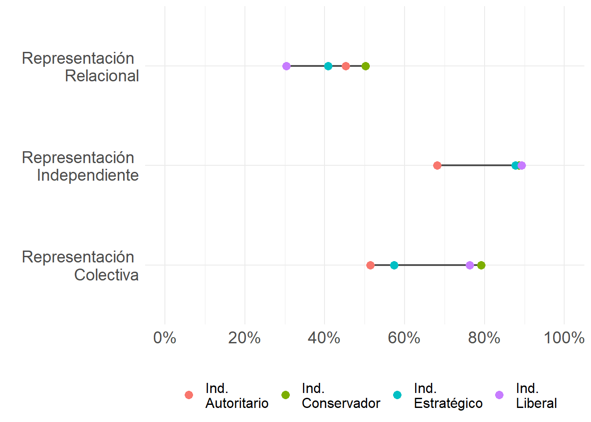

Más Allá del Continuo Individualismo-Colectivismo: Perfiles de Individualismo en la Sociedad Chilena
Beyond the Individualism-Collectivism Continuum: Profiles of Individualism in Chilean Society
![]()
Resumen
Este artículo tiene como objetivo identificar, mediante un modelo de clases latentes, los perfiles de individualismo presentes en la sociedad chilena. El individualismo se entiende aquí como el conjunto de concepciones que atribuyen a la persona la responsabilidad principal sobre su propia vida, definiendo al mismo tiempo el lugar del individuo en la sociedad. Esta conceptualización permite abordar el individualismo como resultado de procesos sociohistóricos de individuación, los cuales varían no solo entre culturas, sino también al interior de una misma sociedad.
A partir de datos secundarios de la séptima ola de la Encuesta Mundial de Valores en Chile (2018), se realizó un Análisis de Clases Latentes que reveló cuatro perfiles de individualismo: autoritario, conservador, liberal y estratégico. Aunque estos perfiles comparten similitudes en sus niveles de independencia e interdependencia, se distinguen fundamentalmente en las esferas donde la individualidad se considera legítima.
Los resultados de esta investigación permiten, por un lado, cuestionar la idea de que la sociedad chilena pueda ubicarse en un continuo lineal entre individualismo y colectivismo. Por otro, contribuyen a matizar las interpretaciones unívocas que suponen la existencia de una forma homogénea de individualismo en Chile.
Palabras clave
Individualismo, Individuación, Análisis de clases latentes
Introducción
Desde los inicios de las ciencias sociales, la pregunta por cómo las sociedades se mantienen unidas ha sido central para la reflexión sociológica. Aunque la modernidad se asoció con una mayor autonomía individual, el individualismo fue visto con sospecha por figuras fundacionales. Si bien este nuevo fenómeno estuvo lejos de significar el fin de la sociedad, autores como Alexis de Tocqueville y Émile Durkheim advirtieron que un individualismo extremo puede derivar en patologías sociales, como la fragmentación de los vínculos comunitarios.
Esta preocupación adquiere especial relevancia en el contexto contemporáneo, marcado por una acumulación de crisis sociales, políticas y económicas que tensionan la cohesión social a escala global. En Chile, la cuestión se vuelve particularmente visible tras el ciclo abierto por la crisis social de 2019, las frustradas experiencias constituyentes y crisis sucesivas —sanitaria, migratoria y de seguridad—, que han reactivado el debate sobre la calidad de los lazos cívicos, sociales y comunitarios en el país (Castillo et al., 2022; Ministerio de Desarrollo Social y Familia, 2020; Salazar-Xirinachs, 2023).
Chile se ha caracterizado por el avance de reformas neoliberales profundas durante la dictadura militar (1973–1990) y su posterior consolidación en democracia. Dichas transformaciones excedieron el plano económico e instalaron un discurso hegemónico que enfatiza el esfuerzo personal, la competencia y la meritocracia como vías legítimas de logro. Políticas públicas en educación, salud y bienestar reforzaron la responsabilidad individual, favoreciendo subjetividades centradas en la agencia personal (Araujo & Martuccelli, 2012), legitimando desigualdades económicas (Castillo et al., 2024), favoreciendo el actuar estratégico (Araujo & Martuccelli, 2014) y, eventualmente, inhibiendo el cambio político (PNUD, 2024).
Desde esta perspectiva, la presencia de un individualismo asocial (PNUD, 2024) operaría como fuerza disgregadora de lazos sociales y ciudadanos, configurándose como un desafío para la mantención de la cohesión social en Chile. En este contexto, este artículo busca aportar a la discusión empírica identificando los distintos perfiles de individualismo presentes en la sociedad chilena.
El estudio del individualismo ha estado dominado por la psicología cultural, especialmente a partir del enfoque popularizado por Geert Hofstede en los años ochenta. En su formulación, el individualismo y el colectivismo constituyen polos de un continuo unidimensional que permitiría distinguir entre culturas individualistas y colectivistas (Oyserman et al., 2002; Yoon, 2010). Las primeras se caracterizan por lazos poco estrechos y expectativas de autosuficiencia individual y familiar; las segundas, por la integración temprana en grupos cohesionados que brindan protección a cambio de lealtad (Yoon, 2010).
El fenómeno del individualismo ha sido abordado principalmente desde la psicología cultural, particularmente desde el enfoque popularizado por Geert Hofstede en la década de 1980. Para Hofstede, el individualismo es el polo de un espectro continuo y unidimensional que tiene en su otro extremo al colectivismo. De tal modo, sería posible distinguir entre culturas individualistas y culturas colectivistas (Oyserman et al., 2002; Yoon, 2010). Las sociedades individualistas se caracterizarían por la existencia de lazos poco estrechos entre sus individuos, de quienes se espera se hagan cargos de sí mismos y de su familia inmediata. Las sociedades colectivistas, en tanto, se definen porque sus miembros están integrados desde su nacimiento a grupos fuertemente cohesionados que los protegen a lo largo de sus vidas a cambio de una lealtad incuestionable (Yoon, 2010).
Pese a su influencia, este enfoque ha recibido críticas por su vaguedad conceptual —a veces tratado como un “catch-all” para explicar toda diferencia cultural (Voronov & Singer, 2002)— y por su sesgo normativo, que asocia el individualismo con la modernidad y el desarrollo (Martuccelli, 2010; Voronov & Singer, 2002; Wang & Liu, 2010). También se le objeta la imprecisión en la definición de “colectivos” —sin distinguir con claridad entre grupos, colectivos y comunidades (Brewer & Chen, 2007; Moemeka, 1998; Oyserman et al., 2002)— y la frecuente confusión entre niveles de análisis (cultural vs. individual), a menudo solapando cofundiéndose a nivel operacional y teórico con conceptos como el self-construal (Cross et al., 2011; Voronov & Singer, 2002).
A ello se suman problemas de operacionalización (Brewer & Chen, 2007; Oyserman et al., 2002). Brewer y Chen (2007) señalan la existencia de una asimetría habitual en las operacionalizaciones de los conceptos: mientras el individualismo se mide con ítems sobre identidad y agencia personal, el colectivismo suele capturarse como un sistema de valores.
Estas discrepancias conceptuales podrían explicar las anomalías observados en varios de estos estudios, como que los individualistas pueden ser tanto o más colectivistas que colectivistas mismos (Oyserman et al., 2002), o que en determinados contextos los colectivistas actúan de manera individualista (Voronov & Singer, 2002).
En el plano agregado, Chile ilustra esas tensiones. Bajo la definición de Hofstede, la sociedad chilena ha sido clasificada como colectivista (León Quillas et al., 2022; Rojas-Méndez et al., 2008). Esto concuerda con hallazgos que reportan altos niveles de colectivismo, sea como opuesto al individualismo (Oyserman et al., 2002) o como self-construal interdependiente (Benavides & Hur, 2020). Sin embargo, otras mediciones muestran niveles de individualismo en Chile que son comparables o superiores a los de sociedades típicamente individualistas, como Estados Unidos (Oyserman et al., 2002) o Noruega (Kolstad & Horpestad, 2009).
Surge así una doble pregunta: ¿es realmente una sociedad colectivista?, y si no lo es, ¿hasta qué punto es una sociedad individualista? La propuesta de esta investigación es que, con el fin de responder esta pregunta, es necesario dar un giro hacia una perspectiva teórica que provea el lenguaje para describir el individualismo chileno. Particularmente, este artículo buscará responder esta pregunta a través del lente de la teoría de la individualización y, particularmente, desde la sociología del individuo.
Desde fines de los noventa, la teoría de la individualización ha sido un marco ampliamente utilizado en las ciencias sociales para analizar transformaciones culturales, sociales y económicas (Yopo, 2013), aplicándose a temáticas como género y familia (Murray & Tizzoni, 2022), religión (Baeza & Imbarack, 2022; Cortés Paredes, 2022), trabajo (Soto et al., 2021), seguridad (Trebilcock & Luneke, 2019), discapacidad (Solsona-Cisternas, 2023) y educación (Canales Cerón et al., 2021; Pinheiro et al., 2023). No obstante, se ha advertido su adopción a veces acrítica, con escasa atención a especificidades nacionales y latinoamericanas y con limitada incorporación de variables sociodemográficas que permitan identificar diferencias entre grupos (Gayo, 2017; Yopo, 2013).
Sin embargo, se ha advertido que muchas de las investigaciones que siguen esta línea teórica lo hacen a través de una aproximación acrítica a las claves interpretativas de la teoría, sin llegar a dar cuenta de las particularidades de estos procesos en Chile y en América Latina. Por otro lado, se ha observado que en los estudios que utilizan esta perspectiva teórica rara vez se usan variables sociodemográficas de manera explicativa, descuidando posibles diferencias entre grupos sociales (Gayo, 2017).
Reconocer estas limitaciones es crucial, ya que existe el riesgo de asumir una individuación homogénea dentro de la sociedad, sin contrastación empírica suficiente, ya sea por imprecisiones conceptual (Yopo, 2013) o por déficits metodológicos (Gayo, 2017).Esta brecha existe pese al consenso aparente de que la individuación es un proceso que diverge no solo entre culturas, sino también dentro de una misma sociedad (Martuccelli, 2018).
Ante esto, el siguiente artículo busca abordar estas diferencias no solo de manera declarativa a nivel teórico, sino identificarlas empíricamente. A continuación, se presenta el marco conceptual y las definiciones centrales de esta investigación; luego, al estrategia metodológica; posteriormente, los hallazgos, caracterizando los perfiles identificados. Finalmente, se introduce discuten los resultados a la luz del modelo teórico y las limitaciones del estudio, junto con proyecciones para futuras investigaciones.
El Individualismo desde la Sociología del Individuo
¿Es Chile una sociedad colectivista? Si no lo es, ¿qué forma adopta el individualismo en la sociedad chilena? Abordar estas preguntas desde la psicología cultural puede conducir —como advierte Martuccelli— a un “relato de la insuficiencia” (“Chile no es un país individualista”) o a un relato del ni-ni (“Chile no es ni individualista ni colectivista”) (Martuccelli, 2010).
Para escapar de estas trampas y ganar capacidad descriptiva, se propone el giro hacia la sociología del individuo desarrollada por Danilo Martuccelli (Araujo & Martuccelli, 2012, 2014, 2020b; Martuccelli, 2010, 2018). La ventaja de adoptar esta perspectiva es que ofrece un marco unificador que permite rescatar los aportes de otras disciplinas a la descripción teórica y empírica del individualismo, a la vez que ofrece un lenguaje apropiado para las particularidades del individualismo chileno.
En esta perspectiva, la modernidad instala una representación hegemónica de un individuo soberano en dos sentidos: (i) dueño de sí —independiente, autónomo, singular— y (ii) capaz de fundamentar el orden social y la soberanía colectiva a partir de su racionalidad. Este individuo se ubica en el centro del pacto social, en lo que Martuccelli denomina individualismo institucional, que se compone de tres características principales (Martuccelli, 2018):
una separación tajante entre holismo e individualismo, que legitima la individualidad y la acción individual en todas las esferas de la vida social
Una concepción atomizada de la persona, prexistente a sus lazos sociales
la primacía de las instituciones en los procesos de individuación, poniendo la autonomía como valor primordial de estos procesos.
Las lecturas se límitan a entender el individualismo como este modelo universal suelen negar la existencia de individuos, individualización o individualismo allí donde el patrón no calza (Martuccelli, 2018). En cambio, la sociología del individuo permite pluralizar el fenómeno y describir sus configuraciones concretas. Sobre esa base, adoptamos la siguiente definición que, si bien rescata la dimensiones del individualismo institucional, se aleja de pretensiones unívocas y se abre a potenciales variantes.
De tal modo, se entenderá como individualismo al conjunto de concepciones que tratan a la persona como el responsable principal de su propia vida. Como tal, el individualismo define el lugar del individuo en la sociedad al (i) legitimar su acción en distintas esferas, (ii) sostener representaciones de mayor o menor independencia o interdependencia, y (iii) poniendo en relieve distintos valores predominantes, como la autonomía o la seguridad.
A continuación, se definirán las principales dimensiones que emergen desde esta definición.
Legitimidad de la acción individual
La legitimidad de la acción individual hace referencia a las creencias sobre la agencia de los individuos en el mundo social (Brewer & Chen, 2007) y la legitimidad de acciones individualizadas en las esferas de la economía, la política y las emociones (Cortois & Laermans, 2018). Una mayor legitimidad de la acción individual se relaciona a una mayor valoración de la individualidad, la cual se define como el “grado de diferenciación o de singularización reconocido o legítimamente alcanzado por un individuo dentro de un colectivo” (Martuccelli, 2018).
El individualismo moderno ha sido institucionalizado principalmente en 3 esferas: la económica, la política y la afectiva (Cortois & Laermans, 2018; Martuccelli, 2018). En la esfera económica, el individualismo legitima la acción individual estratégica, poniendo los medios por sobre los fines. En cambio, en la esfera política, el individualismo se expresa como la obligación de tratar al otro como un fin en sí mismo. Por último, en la esfera afectiva, la acción individual se entiende como un medio para la expresión auténtica del yo (Cortois & Laermans, 2018).
La hipótesis de esta artículo es que determinadas sociedades, o grupos de individuos dentro de estas, pueden legitimar la acción individual en algunas esferas, pero no necesariamente en otros. Por ejemplo, grupos conservadores podrían aceptar la acción individual en la esfera económica, pero no en la política o la afectiva. En cambio, grupos liberales podrían aceptar la acción individual en todas las esferas, pero con distintos grados de legitimidad.
Representaciones culturales del Individuo
Son las diversas concepciones en torno a las que se pueden definir las identidades de los individuos en relación a sus grupos de referencia (Brewer & Chen, 2007). Al respecto, es posible distinguir entre representaciones independientes, relacionales y colectivas (Brewer & Chen, 2007).
La representación independiente es aquella en que el individuo se concibe como un ente atomizado y prexistente a sus lazos sociales. Aunque esta concepción se ha considerado como propia de las culturas individualistas (Benavides & Hur, 2020; Cross et al., 2011), tal idea ha sido problematizada teórica (Voronov & Singer, 2002) y empíricamente (Benavides & Hur, 2020; Kolstad & Horpestad, 2009). Además, la persistencia de los llamados valores asiáticos en esas sociedades, que conceptualizan al individuo como inseparable de sus lazos sociales (Zhai, 2022), y la conceptualización de un híper-actor relacional en la sociedad chilena (Araujo & Martuccelli, 2020b), sugieren la posibilidad de individualismos que difieren de las representaciones independientes.
De tal modo, se podrían identificar, además, representaciones relacionales y representaciones colectivas (Brewer & Chen, 2007). En las primeras, la identidad del individuo se define por sus relaciones cercanas, tales como la familia o los amigos. En las segundas, en tanto, es la pertenencia a colectivos sociales más abstractos – esto es, grupos nacionales, regionales, étnicos o religiosos – lo que define a la identidad individual (Brewer & Chen, 2007).
La hipótesis de este artículo se alinea con las investigaciones de Kathya Aruajo y Danilo Martuccelli (2012), que definen con al individualismo chileno como uno predominantemente relacional. Sin embargo, y en línea con las investigaciones sobre self-construal en la sociedad chilena (Benavides & Hur, 2020; Kolstad & Horpestad, 2009), se espera igualmente encontrar altos niveles de representaciones independientes.
Valores
Por último, la tercera dimensión del individualismo se refiere a la importancia relativa que se le otorga en una sociedad a diversos valores e imperativos individuales o colectivos (Brewer & Chen, 2007), los cuales son producidos por procesos sociohistóricos de individuación (Martuccelli, 2018). En el contexto del individualismo institucional, el principal valor para el individuo es la autonomía (Martuccelli, 2010), la que es promovida a través de un entramado institucional (Martuccelli, 2018) que promueve que los individuos se constituyen a sí mismos, planifiquen su propia vida y acepten la responsabilidad de si fracasan (Robles, 2001). Es, pues, una individuación reflexiva en la que los individuos se definen por el imperativo de ejercer control de sus destinos y tomar decisiones de manera autónoma (Robles, 2001; Silva Palacios, 2015).
Sin embargo, también se han planteado visiones críticas a esta concepción, particularmente desde América Latina (Araujo & Martuccelli, 2012; Robles, 2001). No toda individuación sería reflexiva, ya que muchos individuos podrían experimentarla de forma delegativa, como una imposición (Silva Palacios, 2015); no como un mundo de posibilidades, sino como uno lleno de incertidumbres. Los individuos, de tal modo, deben enfrentar las inseguridades ontológicas de la vida social a partir de sus propias habilidades bajo el imperativo de “arréglatelas como puedas” (Araujo & Martuccelli, 2014; Robles, 2001). Frente a esto, la valorización de la autonomía se desplaza por la búsqueda de seguridad como valor principal de esta forma de individuación (Silva Palacios, 2015).
La hipótesis de esta investigación es que en la sociedad chilena ha predominado una individuación delegativa que enfatiza valores como la seguridad por sobre la autonomía. No obstante, es posible que en grupos con mayores niveles de bienestar o estatus socioeconómico predomine una individuación reflexiva que enfatice la autonomía.
La propuesta conceptual planteada en esta sección se resume en el Figura 1.
Estrategia metodológica
Datos
La investigación consistió en un estudio de tipo cuantitativo a partir de datos secundarios recolectados originalmente para la séptima ola de la Encuesta Mundial de Valores, la más reciente hasta la fecha. Este instrumento proporciona una muestra representativa a nivel nacional, con indicaores relevantes sobre valores y creencias sociales, políticas y económicas de la población, posibilitando la construcción de un modelo que identifique perfiles de individualismo.
El trabajo de campo se llevó a cabo en los meses de enero y febrero de 2018, con una muestra compuesta por 1.000 personas mayores de 18 años, seleccionadas mediante un proceso de muestreo multietápico de tres niveles. La muestra es representativa a nivel nacional, así como de áreas urbanas y rurales.
Indicadores
Se entenderá al individualismo como una variable latente y categórica, construida de manera inductiva a partir de un conjunto de indicadores operacionalizados en base de las definiciones teóricas previamente expuestas. La Tabla 1 presenta un resumen de los indicadores seleccionados.
Legitimidad de la acción individual
La legitimidad de la acción individual se midió en tres esferas:
En la esfera económica, se seleccionaron indicadores que miden la legitimidad de acciones estratégicas destinadas a obtener beneficios personales, incluso si estas acciones van en contra de las normas sociales. El énfasis aquí se centra en la legitimidad de poner los fines por sobre los medios. Además, se incluye un indicador que evalúa la valoración de la competencia.
En la esfera política, se incluyeron indicadores relacionados con la importancia atribuida a la igualdad de ingresos, la igualdad de género y los derechos civiles en una democracia.
En la esfera afectiva, se incluyeron indicadores relaciones con la legitimdiad de prácticas individualizadas en las esferas de la sexualidad y el amor, tales como la homosexualidad, el divorcio y las relaciones sexuales premaritales.
Estos 9 ítems corresponden a escalas del 1 al 10. Dado que el análisis de clases latentes, como se introducirá más adelante, requiere que los indicadores del modelo sean categóricos, se ha optado por dicotomizar estas variables. De tal modo, los valores iguales o inferiores a 5 se consideraron como una baja justificación de las acciones mencionadas, mientras que los valores superiores a 5 se entendieron como una alta justificación.
Representaciones del individuo
Se midieron tres formas de representaciones culturales del individuo:
Para medir las representaciones independientes se seleccionó un indicador sobre el grado de control percibido sobre la propia vida, en una escala del 1 al 10, donde 1 representa “ningún control” y 10 “una gran cantidad de control”. El ítem ha sido recodificado de modo que los valores iguales o inferiores a 5 representen un bajo control sobre la propia vida, mientras que los valores superiores a 5 se entienden como un alto control.
Las representaciones relacionales se midió a través del grado de acuerdo con la afirmación “una de mis metas en la vida ha sido que mis padres estén orgullosos de mí”. Se trata de una escala Likert de 4 categirías, por lo que se optó por mantener la codificación original y reducir la pérdida de varianza.
Las representaciones colectivas se midió a través del grado de cercanía que siente con el país. Al igual que el ítem anterior, se trata de una escala Likert de 4 categorías, por lo que mantuvo la codficación original.
Valores
El indicador seleccionado consisnte en la pregunta la mayoría de las personas consideran que tanto la libertad como la seguridad son importantes, pero si tuviera que elegir una, ¿cuál consideras que es más importante? Este indicador proporciona una forma sencilla de determinar si la autonomía es el valor principal para los individuos o si ve desplazada por el deseo de seguridad.
Método
Se empleó un análisis de clases latentes (LCA) para identificar los perfiles de individualismo en la sociedad chilena. El LCA es un modeleo de variables latentes categóricas, lo que permite identificar diferencias cualitativas y principios de organización dentro de la población (Collins & Lanza, 2010).
En contraste a las técnicas estadísticas más utilizadas, el análisis de clases latente se suele considerar como una aproximación orientada a la persona (Collins & Lanza, 2010). Etsta forma de abordar el análsisis estadístico se diferencia en que no busca establecer relaciones entre variables, sino que tiene como objetivo producir resultados interpretables a nivel del inviduo, brindando información sobre los patrones generales y el comportamiento de las personas (Bergman & Lundh, 2015). De tal modo, el LCA ofrece la oportunidad de llevar a cabo una sociología a nivel del individuo, posibilitando mapear los procesos estructurales de individuación en Chile. Esto permitiría obtener una versión menos unívoca del individualismo chileno, desarrollando una tipología que identifique divergencias y difracciones de este fenómeno en la sociedad chilena.
El análisis se realizó utilizando el paquete poLCA (polytomous Variable Latent Class Analysis) en R. Este paquete permite especificar modelos de clases latentes de manera eficiente con solo unas pocas líneas de código y proporciona información valiosa sobre el tamaño de cada clase latente, las probabilidades posteriores de membresía y criterios para evaluar el ajuste del modelo (Linzer & Lewis, 2011).
La selección del modelo se realizó a partir de la evaluación del ajuste estadístico de modelos con distintos números de clase mediante el Criterio de Información Akaike (AIC) y el Criterio de Información Bayesiano (BIC), adeemás de criterios de interpretabilidad teórica. AIC y BIC son dos indicadores de ajuste relativo que permiten la comparación de modelos. Un valor más bajo en estos indicadores indica un mejor ajuste, lo que representa un equilibrio óptimo entre la complejidad y la parsimonia dle modelo (Collins & Lanza, 2010).
Resultados
Análisis Descriptivo
En la Figura 2 se presenta la distribución de los indicadores de individualismo para el total de la muestra. Se destaca una alta valoración de la competencia (70%), pero un amplio rechazo al actuar estratégico cuando se trata de mentir para obtener beneficios sociales (63%) o en la evasión del transporte público (80%). Además, se observa una valoración moderadamente alta de los indicadores de individualismo moral e individualismo expresivo.
El 83% declara sentirse a cargo de su propia vida, lo que denota un alto nivel de autonomía en la población. Asimismo, el 84% considera que hacer sentir orgullosos a sus padres es uno de los principales objetivos en la vida. Además, el 90% se siente cercano o muy cercano al país. En conjunto, estos resultados son coherentes con la evidencia previa que indica que las autoconcepciones independientes e interdependientes no son excluyentes, sino que coexisten y alcanzan niveles igualmente altos en Chile (Benavides & Hur, 2020; Kolstad & Horpestad, 2009).
Por último, una proporción importantes de la población (82%) prioriza la seguridad (en rojo en la Figura 2) por sobre la libertad (en azul). Este hallazgo podría representar evidencia a favor de que la autonomía no es el valor principal en base al cual las personas no se constituyen como individuos en Chile (Martuccelli, 2010).
Perfiles de Individualismo
Se seleccionó un modelo de 4 clases a partir de criterios estadísticos y teóricos. Como se puede ver en la la Figura 3, las cuatros clases muestran patrones claramente distintos entre sí, así como diferencias respecto a la distribución promedio de la muestra.
Clase 1: Individualistas Autoritarios
La clase 1, que representa el 29% de la muestra, se caracteriza por valorar positivamente la competencia, pero a la vez tiende a rechazar la acción individual en diversas esferas. Por ejemplo, se observa un alto rechazo a evadir en el transporte público (88%), una mayor indiferencia hacia los derechos civiles (83%) y un rechazo a la homosexualidad (84%). Dicho en otras palabras, la acción individual cuenta con baja legitimidad tanto en la esfera económica, como en la política y en la expresiva. Para este grupo, la individualidad debe estar subsumida al respeto irrestricto a las normas socailes establecidas. Asimismo, la probabilidad de que los miembros de esta clase prefieren la seguridad por sobre la libertad es la más alta entre las 4 clases, con un 73%.
Pese a esta desconfianza generalizada hacia la acción individual y la autonomía, este grupo igualmente muestra un porcentaje relativamente alto de independencia, con un 68%. No es, pues, que se niegue la indivualidad, sino que se concibe que esta debe estar siempre subsumida al respeto irrestrico a las normas sociales establecidas. Dado que la conformidad es una característica fuertemente asociada a las personalidades autoritarias (Zakrisson, 2005), se ha decidido bautizar a este perfil como individualismo autoritario.
La edad promedio de este grupo es de 46,3 años, ligeramente superior al promedio de la muestra (44,3 años). Además, este grupo muestra una mayor religiosidad en términos nominales, con un 67% de ellos identificandose como católicos.
Clase 2: Individualistas Conservadores
La clase 2 (19% de la muestra) se caracteriza por una alta probabilidad de justificar la competencia y de legitimar la acción individual en la esfera política, mientras rechaza tanto la acción estratégica como la individualidad en la esfera expresiva. Esto se ve reflejado en las altas probabilidades, mayores que las del resto de los grupos, de rechazar la homosexualidad (100%), el divorcio (79%) y el sexo premarital (82%).
Pese a compartir este último rasgo con el individualismo autoritario, difieren significativamente en cuanto a la valoración de la acción individual en la esfera política. Por ejemplo, la probabilidad de presentar una alta valoración de los derechos civiles alcanza un 93% entre la clase 2, la más alta entre las cuatros clases, como se aprecia en la Figura 4.
Es por la mezcla entre el rechazo a una individualidad expresiva pero la valoración de la individualidad política es que se ha denominado a este grupo como individualismo conservador. Los individualistas conservadores se caracterizan por tener 47,8 años en promedio, se encuentran políticamente más a la derecha y son mayoritariamente católicos (63%).
Clase 3: Individualistas Liberales
Esta clase, el 27% de la muestra, tiene algunos rasgos similares con el individualismo conservador. Por ejemplo, muestra una alta probabilidad de legitimar la competencia así como la acción individual en la esfera política, mientras rechaza las acciones estratégicas.
Sin embargo, se diferencia de la variante anterior en dos aspectos principales. Por un lado, en la alta legitimidad otorgada a la individualdad en la esfera expresiva: 76% justifica la homosexualidad, 91% el divorcio y 89% el sexo premarital. Por otro lado, este grupo se destaca como la única clase donde la probabilidad de elegir la libertad es mayor que la de preferir la seguridad (57%).
De tal modo, se ha denominado a esta clase como individualismo liberal, pues, sus valores apuntan al respeto a la libertad y a la tolerancia de la acción individual en todas las esferas de la vida social, aunque manteniendo el respeto por algunas normas básicas de convivencia. Los individualistas liberales tiene una mayor proporción de personas en la izquierda y centro izquierda del espectro político (28%), pero también es el que alberga la mayor cantidad de personas sin identificación política. Por otro lado, en contraste con las dos clases anteriores, este grupo es menores religioso, con un 36% de sus miembros declarando no tener afiliación religiosa.
Clase 4: Individualistas Estratégicos
Finalmente, la clase 4 (25% de la muestra) se caracteriza por ser el único perfil en donde se observa una alta probabilidad de legitimar la acción individual en todas las esferas, incluso si esto implica transgredir las normas sociales, como se aprecia en la Figura 6. Por esta razón, se ha decidio denominar a este perfil como individualismo estratégico.
De los cuatro perfiles, este es el único donde se observan diferencias en la composición de género, mostrando una leve feminización (56%). Además, es el grupo más joven, con una edad promedio de 40,3 años. Comparte con el individualismo liberal una baja identificación religiosa, ya que el 37% de sus miembros declara no tener una religión.
Discusión
A partir de los datos examinados, se lgró identificar cuatro perfiles distintos de individaulismo en la sociedad chilena: individualismo autoritario, individualismo conservador, individualismo liberal e individualismo estratégico. Cada uno de estos perfiles equivale a variadas definciiones de la posición del individuo en la sociedad, y son resultado de combinaciones específicas de legitimdiad de la acción individual en diferentes esferas, concepciones variadas del individuo y diferentes valores priorizados. Además, la presencia de dieferencias edad, orientación política y afiliación religiosa entre estos perfiles arroja luces sobre cómo los procesos estructruales de individuación pueden interactuar de manera diferenciada con distintos segmentos de la población.
La tipología elaborada permite establecer un diálogo con la descripción del individualismo agéntico y el hiper-actor relacional propuesto por Araujo y Martuccelli (Araujo & Martuccelli, 2020a). Este modelo presenta dos características fundamentales: en primer lugar, la confianza depositada en las habilidades personales para afrontar la vida social. En segundo lugar, la centralidad de las redes interpersonales. Estos dos rasgos son observables de manera transversal en los cuatro perfiles identificados.
En relación con la confianza en el esfuerzo y las habilidades personales, esto podría observarse en la alta valoración de la competencia y los elevados niveles de independencia observados de manera transversal en todos los perfiles, como se observa en Figura 7. En términos generales, los datos sugieren que la mayoría de los chilenos cree poseer las habilidades necesarias para asumir el control de sus propias vidas.

Lo mismo sucede con los altos niveles de interdependencia observados a través de los cuatro perfiles, poniendo en relieve el carácter relacional del individualismo chileno. Los individuos en Chile, de tal modo, no se constituyen de manera atomizada, sino también en relación a sus familias y a sus identidadades colectivas.
De tal modo, se observa que el carácter relacional del individualismo chileno parece no entrar en contradicción con las concepciones independientes, que muestran niveles tan elevados como los de interdependencia. Esto es consistente tanto con las dos carácteristas que describen al individualismo agéntico (Araujo & Martuccelli, 2020a) como con las mediciones del self-construal en Chile (Benavides & Hur, 2020; Kolstad & Horpestad, 2009). Además, ofrece más respaldo a la idea de que ubicar a Chile en un continuo entre el individualismo y el colectivismo resulta problemático.
En resumen, los datos analizados parecen apuntar a la existncia de un individualismo agéntico (Araujo & Martuccelli, 2020a), que representaría una suerte de modelo ideal del individualismo en Chile. Sin embargo, el aporte de esta investigación radica e que, mediante el análisis de clases latentes, es posible observar cómo este modelo diverge dentro de la sociedad chilena. Para algunos, la acción individual debe estar subordinada al orden normativo, mientras que para otros es legítimo actuar de manera estratégica incluso si ello transgrede normas sociales. Mientras que para unos la individualidad tiene cabida en todas las esferas, para otros su legitimidad no alcanza para la esfera afectiva. De tal modo, este enfoque permite observar los matics y las divergencias de los procesos de individualización en Chile.
Conclusiones
Es importante reflexionar sobre las oportunidades que brinda el análisis de clases latentes en la investigación sobre los procesos de individuación en Chile. Dada la dificultad para traducir su marco teórico en una propuesta metodológica mediante las técnicas cuantitativas más comunes, la sociología del individuo se ha desarrollado principalmente desde una perspectiva cualitativa, resultando en descripciones profundas y estimulantes sobre el indiudo en la sociedad chilena. Pese a ello, el enfoque metodológico adoptado en esta investigación, caracterizado por la aproximación orientada a la personas del modeeo de clases latentes, permitió identificar algunos de los rasgos del individualismo agéntico descritos por Araujo y Martuccelli (2014), al tiempo que ofrece una visión más matizada de cómo los procesos de individuación divergen en la sociedad chilena.
Por supuesto, enfoques cualitativos y cuantitativos no deben ser vistos como competitivos, sino como complementarios en el desarrollo de una sociología del individuo. La propia tipología aquí delineada se vería fuertemente enriquecida si se incluyeran datos cualitativos que permitieran una comprensión más profunda de las distintas variables de individualismo.
Ahora bien, es necesario reconocer las limitaciones que enfrentó esta investigación, principalmente derivadas de los indicadores seleccionados. Aunque los resultados obtenidos son prometedores, es crucial continuar avanzado en la construcción y validación de indicadores que permitan traducir el modelo teórico aquí propuesto en un modelo de medición capaz de abordar el fenómeno del individualismo en Chile.
Especialmente, se debe tener en cuenta que la recodificación de variables continuas como dicotómicas es una solución correcta, pero que no deja de ser problemática, pues resulta en pérdida de parte de la varianza de los ítems (Fernandes et al., 2019). Futuras investigaciones deberían considerar elaborar indicadores directamente como variables categóricas que no necesiten recodificación para ser incluidas en el modelo de clases latentes. De esta manera, se obtentendría claridad en los resultados sin sacrificar información ni poder estadístico.
Por otro lado, se debe considerar que la muestra utilizada es del 2018, por lo que no alcanza a aprehender las consecuencias de procesos y eventos sociles de agran relevancia acontecidos en el último lustro, incluyendo el Estallido Social, la Pandemia de COVID-19 y los procesos constituyentes. Una nueva ola de la Encuesta Mundial de Valores se encuentra en desarrolo, lo que dará una oportunidad para probar este modeeo con datos actualizados. A su vez, dado que Chile ha participado en 6 olas de la Encuesta Mundial de Valores desde 1990, se debería considerar un estudio comparativos a partir de datos de ediciones anteriores.
Pese a estas limitaciones, el modelo propuesto logra identificar variantes de individualismo, ilustrando tanto la dificultad para ubicar a la sociedad chilena en un espectro individualismo-colectivismo, al mismo tiempo que matiza las descripciones unívocas del individualismo chileno. Esto abre la posibilidad para profundizar en este modelo en el futuro, particularmente en su interacción con otros fenómenos sociales.
Por dar solo un ejemplo, en el más reciente Informe sobre el Desarrollo Humano en Chile (PNUD, 2024) se identifica a la individualismo asocial coo una de las lógicas inhibidoras para conducir el cambio social en el país. ¿Es esa individuación asocial homogénea dentro de la sociedad chilena? ¿Se asocian distintas formas de individuación e individualismo con diferentes maneras de relacionarse con el espacion público? ¿Qué factores explican essas divergencias? El modelo aquí propueso podría dar algunas luces para responder estas preguntas, permitiendo entender mejor como el individualismo se relaciona con la esfera pública, la democracia y la participación política.
Referencias
Araujo, K., & Martuccelli, D. (2012). Desafíos Comunes. Retrato de La Sociedad Chilena y Sus Individuos. LOM.
Araujo, K., & Martuccelli, D. (2014). Beyond Institutional Individualism: Agentic Individualism and the Individuation Process in Chilean Society. Current Sociology, 62(1), 24-40. https://doi.org/10.1177/0011392113512496
Araujo, K., & Martuccelli, D. (2020a). Leer Los Movimientos Sociales Desde El Individualismo: Reflexiones a Partir de Latinoamérica. Educação & Sociedade, 41, e228265. https://doi.org/10.1590/es.228265
Araujo, K., & Martuccelli, D. (2020b). Problematizaciones Del Individualismo En América Latina. Perfiles Latinoamericanos, 28(55). https://doi.org/10.18504/pl2855-001-2020
Baeza, J., & Imbarack, P. (2022). Movilidad religiosa en jóvenes universitarios de Chile: desafiliaciones y reafiliaciones en la iglesia católica. Religião & Sociedade, 42(3), 60-83. https://doi.org/10.1590/0100-85872022v42n3cap03
Bergman, L. R., & Lundh, L.-G. (2015). Introduction: The Person-Oriented Approach: Roots and Roads to the Future. Journal for Person-Oriented Research, 1(1-2), 1-6. https://doi.org/10.17505/jpor.2015.01
Brewer, M. B., & Chen, Y.-R. (2007). Where (Who) Are Collectives in Collectivism? Toward Conceptual Clarification of Individualism and Collectivism. Psychological Review, 114(1), 133-151. https://doi.org/10.1037/0033-295X.114.1.133
Canales Cerón, M., Orellana Calderón, V. S., & Guajardo Mañán, F. (2021). Sujeto y Cotidiano En La Era Neoliberal: El Caso de La Educación Chilena. Revista Mexicana de Ciencias Políticas y Sociales, 67(244), 285-307. https://doi.org/10.22201/fcpys.2448492xe.2022.244.70386
Castillo, J. C., Espinoza, V., & Barozet, E. (2022). Cohesión social en Chile en tiempos de cambio: indicadores, perfiles y factores asociados.
Collins, L., & Lanza, S. (2010). Latent Class and Latent Tansition Analysis. Wiley.
Cortés Paredes, G. (2022). Autonomía En El Horizonte: Un Análisis Narrativo de Los Procesos de Deconversión En Temuco, Chile. Revista Temas Sociológicos, 30, 75-105. https://doi.org/10.29344/07196458.30.3122
Cortois, L., & Laermans, R. (2018). Rethinking Individualization: The Basic Script and the Three Variants of Institutionalized Individualism. European Journal of Social Theory, 21(1), 60-78. https://doi.org/10.1177/1368431017698474
Cross, S. E., Hardin, E. E., & Gercek-Swing, B. (2011). The What, How, Why, and Where of Self-Construal. Personality and Social Psychology Review, 15(2), 142-179. https://doi.org/10.1177/1088868310373752
Fernandes, A., Malaquias, C., Figueiredo, D., Da Rocha, E., & Lins, R. (2019). Why Quantitative Variables Should Not Be Recoded as Categorical. Journal of Applied Mathematics and Physics, 07(07), 1519-1530. https://doi.org/10.4236/jamp.2019.77103
Gayo, M. (2017). El individuo frente a la sociedad o el western sociológico. Estudios Públicos, 147, 263-279.
Kolstad, A., & Horpestad, S. (2009). Self-Construal in Chile and Norway: Implications for Cultural Differences in Individualism and Collectivism. Journal of Cross-Cultural Psychology, 40(2), 275-281. https://doi.org/10.1177/0022022108328917
León Quillas, C. I., Rueda Rodríguez, H. F., & Hernández Rodríguez, A. (2022). Instituciones Informales, Emprendimiento y Progreso Social: Un Estudio Comparativo y Correlacional. Revista Guillermo de Ockham, 21(1), 113-129. https://doi.org/10.21500/22563202.5577
Linzer, D. A., & Lewis, J. B. (2011). poLCA: An R Package for Polytomous Variable Latent Class Analysis. Journal of Statistical Software, 42, 1-29. https://doi.org/10.18637/jss.v042.i10
Martuccelli, D. (2010). Existen individuos en el sur? LOM.
Martuccelli, D. (2018). Variantes Del Individualismo. Estudios Sociológicos de El Colegio de México, 37(109), 7-37. https://doi.org/10.24201/es.2019v37n109.1732
Ministerio de Desarrollo Social y Familia. (2020). Informe Final Consejo Asesor Para La Cohesión Social. Diagnóstico Para Una Aproximación a La Cohesión Social En Chile y Recomendaciones Para Fortalecer El Aporte de La Política Social.
Moemeka, A. A. (1998). Communalism as a Fundamental Dimension of Culture. Journal of Communication, 48(4), 118-141. https://doi.org/10.1111/j.1460-2466.1998.tb02773.x
Murray, M., & Tizzoni, C. (2022). Raising Children in Hostile Worlds in Santiago de Chile: Optimism and «Hyper-Agentic» Mothers. The Sociological Review, 70(1), 92-107. https://doi.org/10.1177/00380261211056169
Oyserman, D., Coon, H. M., & Kemmelmeier, M. (2002). Rethinking Individualism and Collectivism: Evaluation of Theoretical Assumptions and Meta-Analyses. Psychological Bulletin, 128(1), 3-72. https://doi.org/10.1037/0033-2909.128.1.3
Pinheiro, L. R., Di Leo, P. F., & Varela, F. R. (2023). Itinerarios juveniles, individuación y reflexividades: aproximaciones a la participación social en barrios metropolitanos populares. Educação e Pesquisa, 49. https://doi.org/10.1590/s1678-4634202349270569es
PNUD. (2024). Informe Sobre Desarrollo Humano En Chile 2024. Por Qué Nos Cuesta Cambiar?: Conducir Los Cambios Para Un Desarrollo Humano Sostenible.
Robles, F. (2001). El Desaliento Inesperado de La Modernidad: Molestias, Irritaciones y Frutos Amargos de La Sociedad Del Riesgo. Sociedad de Hoy.
Rojas-Méndez, J. I., Coutiño-Hill, V., Bhagat, R. S., & Moustafa, K. S. (2008). Evaluación del individualismo y colectivismo horizontal y vertical en la sociedad Chilena. Multidisciplinary Business Review, 1(1), 36-48.
Salazar-Xirinachs, J. M. (2023). Repensar, reimaginar, transformar: los «qué» y los «cómo» para avanzar hacia un modelo de desarrollo más productivo, inclusivo y sostenible. Revista de la CEPAL, 2023(141), 11-43. https://doi.org/10.18356/16820908-2023-141-2
Silva Palacios, V. (2015). Narrativas de Individualización En Chile [Tesis de {{Pregrado}}]. Universidad de Chile.
Solsona-Cisternas, D. A. (2023). Individuation Processes in Disabled People. An Approach through Mobilities in Rural Areas of Southern Chile. Disability & Society, 1-23. https://doi.org/10.1080/09687599.2023.2263632
Soto, Á., Stecher, A., & Frías, P. (2021). Nuevas Orientaciones Subjetivas En El Trabajo? Los Jóvenes de La Industria Del Retail En Chile. Athenea Digital. Revista de pensamiento e investigación social, 21(1). https://doi.org/10.5565/rev/athenea.2772
Trebilcock, M. P., & Luneke, A. (2019). Crime Prevention and the Coproduction of Security: Outcomes of Citizen Participation at the Neighborhood Level in Neoliberal Chile. Latin American Perspectives, 46(6), 56-72. https://doi.org/10.1177/0094582x18803681
Voronov, M., & Singer, J. A. (2002). The Myth of Individualism-Collectivism: A Critical Review. The Journal of Social Psychology, 142(4), 461-480. https://doi.org/10.1080/00224540209603912
Wang, G., & Liu, Z.-B. (2010). What Collective? Collectivism and Relationalism from a Chinese Perspective. Chinese Journal of Communication, 3(1), 42-63. https://doi.org/10.1080/17544750903528799
Yoon, K.-I. (2010). Political Culture of Individualism and Collectivism [A {{Dissertation}} for the {{Degree}} of {{Doctor}} of {{Philosophy}} ({{Political Science}})]. Universidad de Michigan.
Yopo, M. (2013). Individualización en Chile. Individuo y sociedad en las transformaciones culturales recientes. Psicoperspectivas. Individuo y Sociedad, 12(2), 4-15. https://doi.org/10.5027/psicoperspectivas-Vol12-Issue2-fulltext-254
Zakrisson, I. (2005). Construction of a Short Version of the Right-Wing Authoritarianism (RWA) Scale. Personality and Individual Differences, 39, 863-872. https://doi.org/10.1016/j.paid.2005.02.026
Zhai, Y. (2022). Values Change and Support for Democracy in East Asia. Social Indicators Research, 160(1), 179-198. https://doi.org/10.1007/s11205-021-02807-3